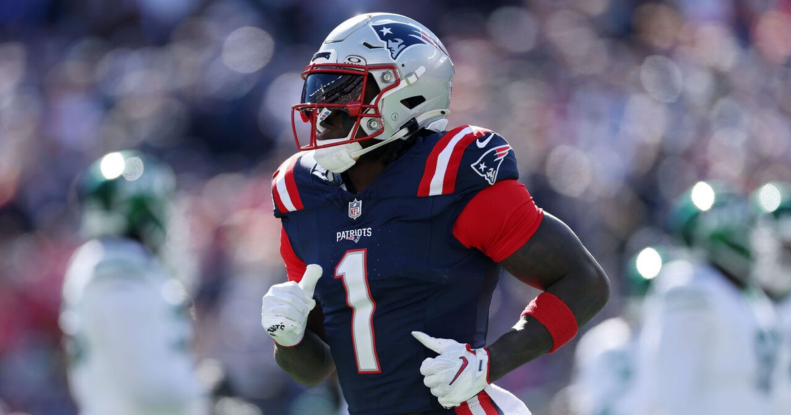

A.J. Brown expected to miss multiple weeks with hamstring injury, the third injury of a lost Patriots season
ESPN reports A.J. Brown is expected to miss multiple weeks with a hamstring injury suffered in the Patriots' Week 10 loss to the Lions in Munich — his third separate injury this season.

Disclosure: this post contains affiliate links. I earn a commission on qualifying purchases.
The news
A.J. Brown is expected to miss multiple weeks with a hamstring injury, ESPN's Adam Schefter and Mike Reiss reported Friday, adding another chapter to what has been a miserable first season in New England for the three-time All-Pro wide receiver.
The Patriots have not placed Brown on injured reserve. But Reiss reports that, were they to do so, he would be eligible to return for the Week 16 game against the Jets after missing four games — which reads like the rough timeline the team is working with.
How it happened
Brown went down in the third quarter of the Patriots' 35-10 loss to the Detroit Lions in Munich, Germany, after a 21-yard catch-and-run. He briefly tried to play through it, then left for the locker room and did not return.
It was his first game back after a two-game absence, and it lasted less than three quarters.
A season of three injuries
This is the third separate injury to sideline Brown this season. He suffered a high-ankle sprain in the Week 1 loss to the Seahawks that landed him on injured reserve for four games. Upon his return, a knee flare-up kept him out of games in Weeks 8 and 9. He came back in Week 10 only to pull his hamstring.
The production, when he has been on the field, has not matched the player New England thought it was getting: four games, 11 catches, 128 yards, zero touchdowns.
That is the return so far on a June trade that sent a 2028 first-round pick and a 2027 fifth-round pick to the Philadelphia Eagles. ESPN's Dan Orlovsky put the question bluntly on Friday: "did they get fleeced?"
What it means for the Patriots
The timing could hardly be worse. New England is 5-5 and on its Week 11 bye, one game behind the Cleveland Browns (6-4) for the third AFC wild-card spot, and the schedule out of the bye is unforgiving: the Chargers, Bills, Vikings, and Chiefs.
And Brown is not even the worst of Friday's news. Quarterback Drake Maye fractured his right fibula in the same loss to Detroit and is likely to miss the rest of the regular season, though he will not need surgery. The Patriots could be without their quarterback and their No. 1 receiver for the stretch run — with a backup quarterback, Tommy DeVito, and a rookie, Behren Morton, behind Maye on the depth chart.
The bye at least buys time. The question is whether there is anything left to save when Brown and Maye are healthy enough to come back.
Gear up: Fanatics